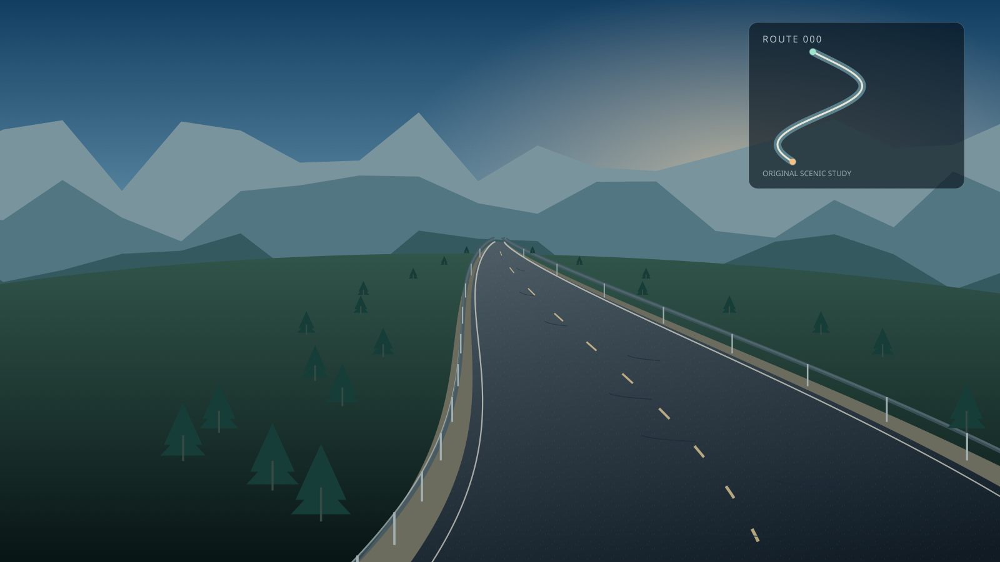

初めて走る
リアルに走るコツ
直線で減速し、前輪に荷重が乗ったところでゆっくりハンドルを切ります。出口が見えたら舵を戻しながらアクセルを開けると、タイヤのグリップを使いやすくなります。
- 最初はATと練習走行を選び、同じコースを同じ車で走って入力の違いを確かめます。
- ウェットや圧雪路は早めに減速。旋回中の急な加速・急ブレーキを抑えます。
- FRは後輪、FFは前輪、MR・RRは荷重の変化に注意。4WDも曲がる前の減速が大切です。
- 図鑑の「比較に追加」で最大3台・3コースを並べて確認できます。絞り込み条件はURLに反映され、同じ条件で開き直せます。
スマホは横向きで走ると見通しが広がります。縦向きでも操作できます。描画が重い場合は「設定」から画質を下げてください。音が出ない場合は、BGMをオンにして画面のボタンを一度押します。
走行操作
キーボードとタッチ操舵は、短く押すと小さく曲がり、押し続けると舵が深くなります。ゲームパッドはスティックを小さく倒すと微調整できます。高速域では短い入力で進路を微調整できます。スマホでは左右の操舵ボタン間を指で滑らせて切り替えられます。「設定」→「画面・運転」で追従カメラの距離を「自動・近め・標準・遠め」から選べます。ドリフトはハンドブレーキで始められます。
キーボード
- ステアリング
- A・D または ←・→
- アクセルと減速・後退
- W・S または ↑・↓
- ドリフト・ニトロ
- Spaceでハンドブレーキ、アクセル中にShiftでニトロ
- MT・カメラなど
- Q・Eで変速、Cでカメラ、Rでコース復帰、Escで一時停止
スマートフォン
- 運転
- ◀・▶で操舵、GASで加速、BRAKEで減速・後退します。
- ドリフト・ニトロ・MT
- DRIFTでハンドブレーキ、NITROを押して加速、−・＋で変速します。
ゲームパッド
- 既定の割り当て
- 左スティックまたは十字キーで操舵、RT / R2で加速、LT / L2でブレーキ・後退します。
- シフトとニトロ
- LB / RBまたはL1 / R1で変速します。加速中の右フェイスボタンでニトロ。割り当てはゲーム内の設定で調整できます。
モードと報酬
- 峠バトルではCPUの台数を1〜7台から選び、自分を含め最大8台で競います。CPUの車種は毎回抽選され、同じレース内で重複しません。難度は初級から伝説まで5段階です。
- タイムアタックでは自己ベストを更新できます。運転アシストを使わず完走したタイムは対戦リンクとして共有できます。
- ドリフトはスコア、練習走行は車とコースの試走に使えます。
- 無限テクニックサーキットにはゴールや制限時間がありません。ドリフト、安定したコーナリング、高速走行でZを稼ぎます。終了は一時停止メニューから行えます。
- 経験値コースは120本。ソロで完走すると通常の報酬に加え121〜4,200 XPを獲得できます。
- 百里耐久ハイウェイは100 km。完走報酬は1,000,000 Z。途中でリタイアを確定すると、走破した1 kmごとに報酬が入ります。1〜10 kmは1,600 Z、11〜40 kmは3,400 Z、41〜99 kmは5,200 Zずつ加算され、99 kmで合計424,800 Zです。
- 30 kmのロングストレートを2本追加しました。黎明高原は完走で追加4,200 XP。湾岸光路は通常の完走報酬に固定額の1,200,000 Zが加わります。いずれもソロ専用です。
ZとXPの計算
- 通常レース 完走でZとXPが入ります。走行距離、順位、CPU難度、メダルやドリフトスコアに応じて加算されます。対戦では人同士のレースに、順位に応じたZが加わります。
- ボーナス・経験値コース Zボーナスコースは完走時にコース分のZが、経験値コースはコース分のXPが加わります。
- レースで獲得するZ 通常レースの基礎Zと通常のコースボーナスは前版の6倍です。無限テクニック走行の基礎Zとミッション達成時のZは4倍です。
- プレイヤーレベル Lv.1は1倍。Lv.51まではレベルが1上がるごとに倍率が0.07ずつ増えて4.5倍に達し、その後は0.035ずつ増えてLv.151で8倍に達します。通常完走のZ、普通のコースボーナス、無限テクニックのZに適用します。
- 部品の強化費 Lv.1への強化費を据え置き、上のレベルほど増える費用を緩やかにしました。64部品をLv.0からLv.32にする費用は合計5,122,050 Zです。車両ステージの解放費は別途必要です。
- ミッション・100 km耐久 ミッションは達成時に提示されたZとXPを受け取れます。百里耐久ハイウェイの完走は固定100万Zと基礎950 XPです。
公式戦
公式戦のソロでは自車とCPU3台で走ります。マルチでは全員がこの更新版で部屋コードを使い、2〜4人が集まります。空き枠をCPUで埋めて4台で走ります。コースとCPU車両はレースごとに抽選されます。
- 1位 25,000 Z・30 pt
- 2位 15,000 Z・18 pt
- 3位 7,000 Z・8 pt
- 4位 0 Z・0 pt
公式戦のポイントを貯めると、10級から1級、初段から10段へ進みます。称号と進行はこのブラウザーに保存します。完走した上位3台に順位報酬が入ります。運営車両は通常の強化で走行し、「性能MAX」は適用されません。
走行中、画面内にいる車の上にニックネームと称号が表示されます。マルチでは対戦相手も同じニックネームと称号を確認できます。ガレージで車にニックネームを付けられます。
グランプリ
グランプリを開くと、全16大会のコース順と優勝称号を確認できます。愛車とCPU7台で、大会ごとに異なる8ステージを順番に走ります。
- 各戦の順位でポイントを加算します。1位 25点、2位 18点、3位 15点、4位 12点、5位 10点、6位 8点、7位 6点、8位 4点。
- プレイヤーの完走後、CPUの走行を集計します。完走した車はゴール時刻順、集計の制限内にゴールできなかったCPUは走行距離順に並びます。
- 8戦の合計ポイントが最も多いドライバーが優勝です。同点の場合は1位の回数、2位の回数のように上位から比較し、すべて同じなら最終戦の順位で決まります。
- 優勝すると大会ごとの称号を獲得します。全16大会で優勝すると、全大会制覇の特別称号が加わります。獲得済みの称号はグランプリ画面で選び、メニューヘッダー・走行画面・総合順位でプレイヤー名の横に表示できます。
- 表示する名前と完走したラウンドを、このブラウザーに自動保存します。大会画面から次のラウンドに進めます。進行と報酬の処理が途中で止まった場合は、開き直すと再開します。
- 描画の初期化で問題が起きた場合は、同じラウンドを軽量描画で再試行します。「互換描画で再試行」ボタンが表示された場合は、ページを再読み込みせずにそのラウンドを開き直せます。
車とチューニング
壁やガードレール、対戦車に当たると、へこみ・こすり傷・ガラスやライトのひび・足回りの傷みが愛車に残ります。ガレージの「メンテナンス」から、板金修理、塗装・磨き、ガラス・ライト交換、ホイール・足回り整備を個別に行えます。
宵層 リムジンと珀樹 グランドサルーンはガレージの運営車両欄から選択できます。既存の運営キーで両方を解放できます。車体はゲーム用に独自設計した形状で表示します。スマホなど負荷を抑えたい場合は設定で「低」を選択できます。
運営車両欄の「性能MAX」をオンにすると、宵層 リムジンまたは珀樹 グランドサルーンで強化上限の性能をソロ試走できます。試走中の報酬・記録は保存されません。オフにすると購入済みの強化が反映されます。
ショップの特別販売「燈路 001」は、独自設計のロングセダン・コンセプトです。ゲーム内の基礎性能は1,000 km/h・5,000 PSで、価格は30,000,000 Zです。
ガレージで所有車とニックネームを選べます。塗装屋では色見本やカラーコードで外装色を選び、3D表示を確認してから車両ごとに保存できます。「標準色に戻す」で初期の色を復元できます。直線や長距離なら加速と最高速、峠やドリフトでは曲がりやすさと駆動方式を見て選ぶと違いをつかみやすくなります。
ショップの「外観と性能を見る」で、購入前に標準色の3D車体を8方向から確認できます。エンジン、変速機、タイヤ、足回り、ブレーキ、ニトロはZで強化できます。
ガレージの「タービン強化」で、所有車ごとにZを使ってLv.0からLv.24へ強化できます。プレイヤーレベル・車両レベルとは別に進み、1 Lvごとに最高速度が20 km/h、加速ポイントが30増加します。Lv.24での加算は最高速度+480 km/h、加速+720ポイントです。
Lv.1への強化は1,000 Z。費用はレベルに応じて上がり、Lv.24までの総額は1,097,640 Zです。性能はソロ・フリールームの走行に反映されます。
ガレージの「ニトロレベル」は所有車ごとにLv.15まで強化できます。ソロ・グランプリ・公式戦・フリールームで、ニトロ噴射中の最高速度が1 Lvにつき25 km/h上がります。最大で+375 km/h。噴射が止まると加算は減衰します。Lv.1は1,000 Z、Lv.15までの合計は219,750 Zです。
すべてのモードでニトロは満タンから始まります。ボタンを離して2秒経つと、10 km/h以上で前進している間にタンクが回復します。Lv.0は毎秒4.0%、Lv.15は毎秒8.5%で、1 Lvごとに毎秒0.3ポイント加わります。
車の強化や速度に応じて、高速域の操舵・制動・変速を補正します。ATとMTで同じ車両調整を適用し、MTは手動で変速できます。
対戦とセーブ
フリールームのホストが発行した部屋コードを参加者が入力します。人とCPUを合わせて最大8台です。経験値コースと100 km耐久はソロ専用です。
セーブデータ同期で手動引き継ぎや自動同期ができます。自動同期はペアリングした両方のゲーム画面が開いている間、同期元から受信側へ進行データを送ります。設定や車体色、ニックネームの引き継ぎには手動同期を使います。
ゲームの世界と素材
512台の車両と256ステージは、ゲーム用に構成した架空の車・道路です。実在メーカーの認定モデルや実在道路の測量再現ではありません。現実の質感や運転感覚を参考にしながら、車体とコースを独自に設計しています。
車両の性能値・設計年・報酬はゲーム上の設定です。高出力の強化やニトロを含む走行は、アーケードとしての遊びやすさを優先しています。